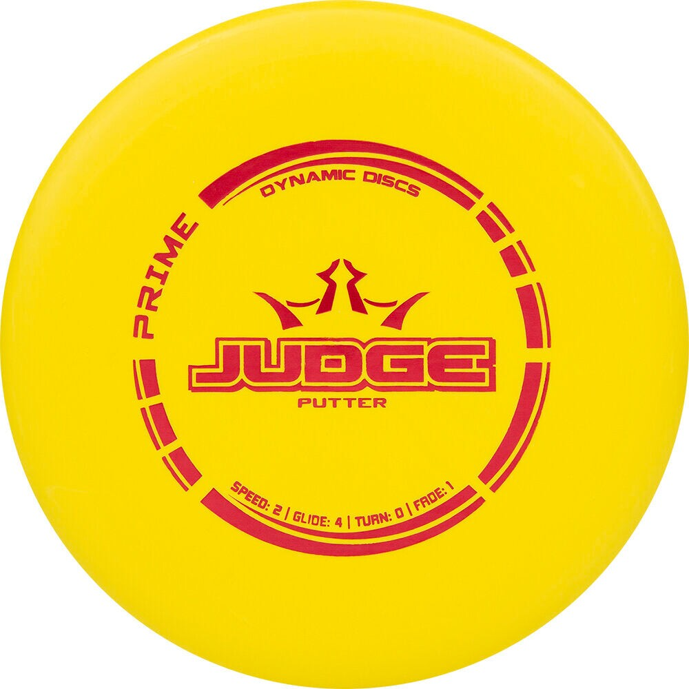
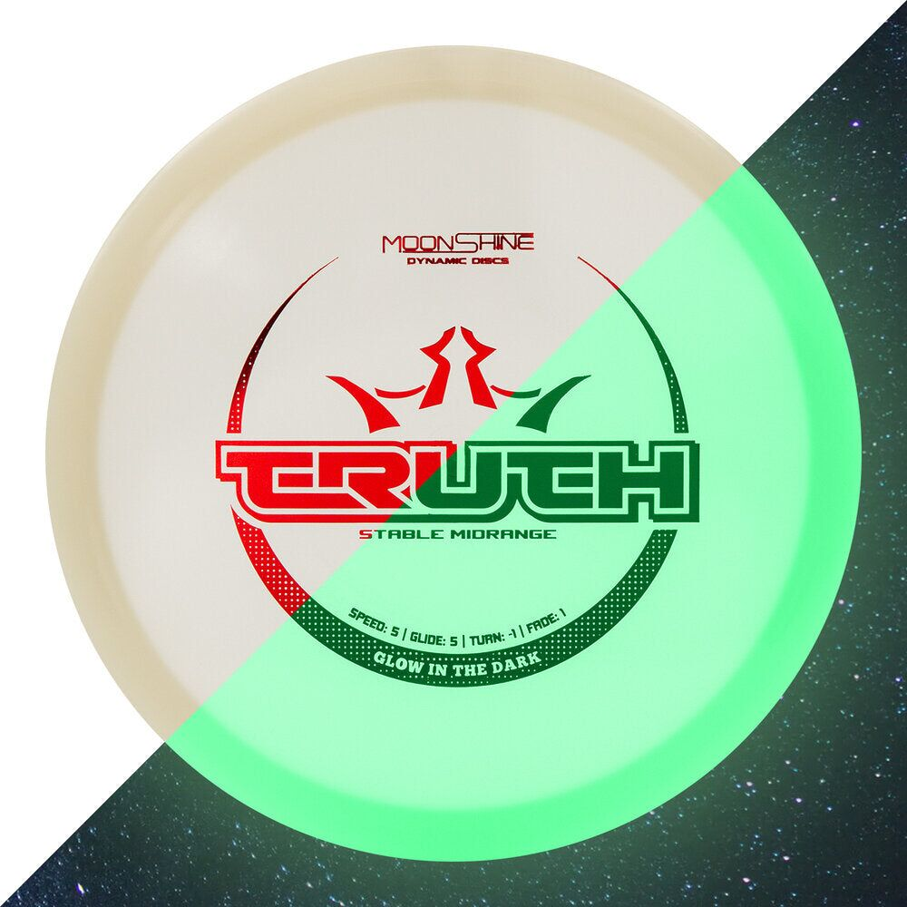
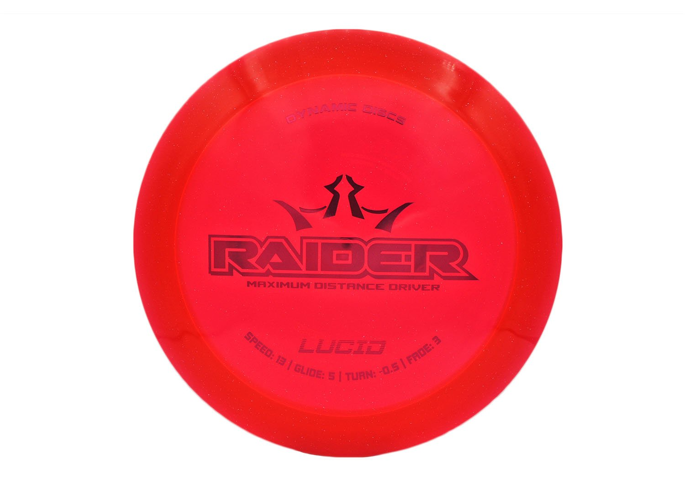
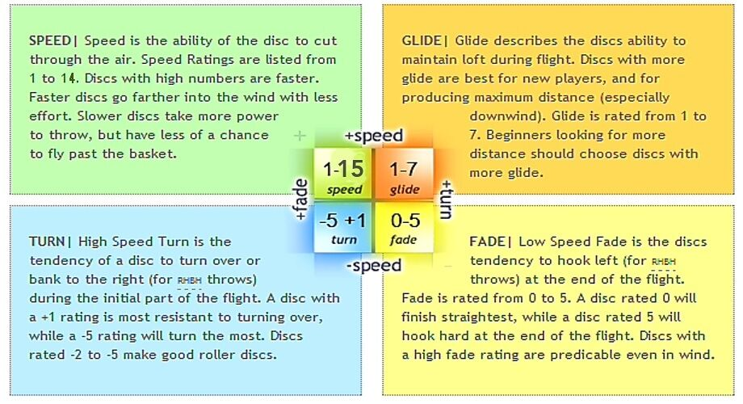
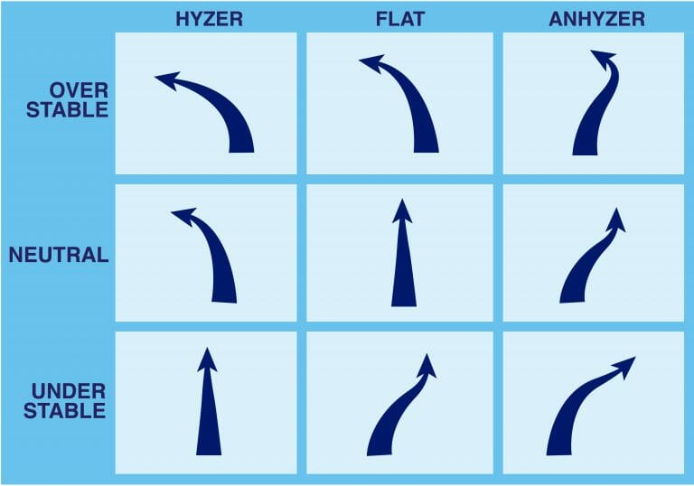

Putters

Putters are the slowest discs and are made for short, accurate throws. They are most often used for putts and approach shots because they usually fly straighter and are easier to control at lower speeds.
Different discs are made for different kinds of throws, and understanding those differences can help new players choose the right disc for each shot. Putters focus on control, midranges balance control and distance, and drivers are built for longer throws with more speed.

Putters are the slowest discs and are made for short, accurate throws. They are most often used for putts and approach shots because they usually fly straighter and are easier to control at lower speeds.

Midranges are a great choice when a shot needs more distance than a putter but still needs dependable control. Many players use midranges for approach shots, straight fairway throws, and learning smooth form.

Drivers are designed for the fastest and longest throws. They work best when a player can generate enough power to get the full flight out of the disc, which is why they are often used from the tee or on open holes.
This image explains the four flight numbers commonly printed on a disc golf disc. These numbers give players a quick way to compare how fast a disc is, how much it glides, and how it is expected to turn or fade during flight.

Flight numbers are helpful, but they do not tell the whole story. A disc can fly very differently depending on how it is released, which is why angle control is such an important part of the game.
The chart below shows how release angle matters. A hyzer release means the outside edge of the disc is tilted downward, which usually makes the disc fade earlier and finish more to the left for a right-handed backhand throw. An anhyzer release means the outside edge is tilted upward, which can make the disc hold to the right longer before fading back. Learning these angles helps players shape different shots even with the same disc.

Disc stability is closely connected to the turn and fade flight numbers. A more overstable disc usually has less turn and more fade, which means it resists turning and finishes harder to the left for a right-handed backhand throw. A more understable disc usually has more turn and less fade, which makes it easier to move to the right before fading back. Stable discs fall somewhere in the middle, and understanding that relationship helps players compare discs more easily. For a deeper explanation, check out this Brodie Smith video.